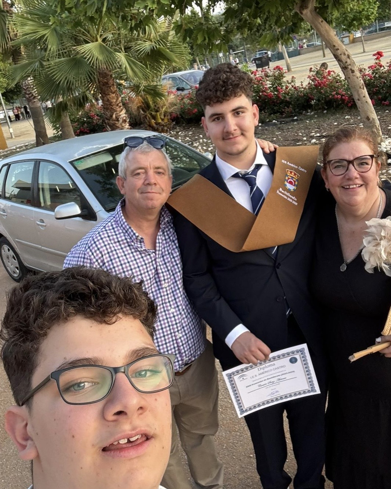
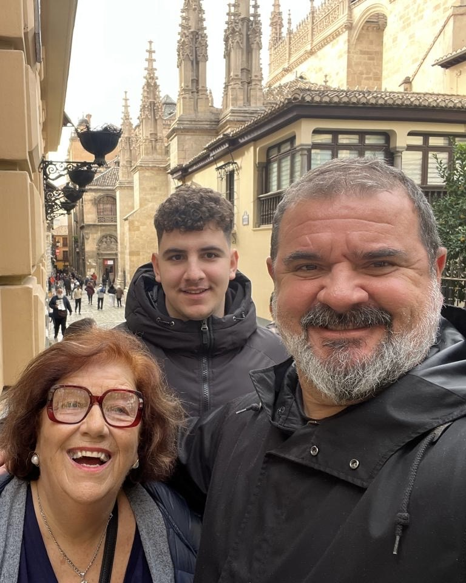
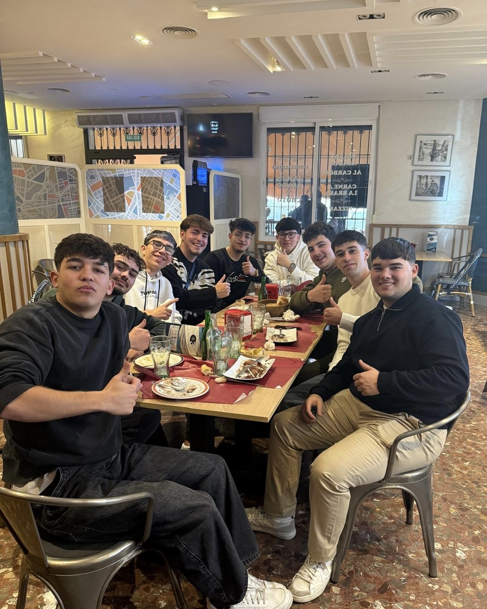
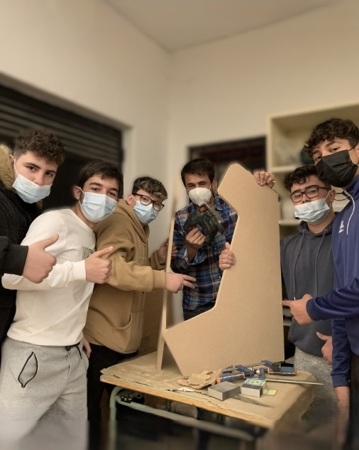

Frontend
Maquetación, detalle visual y microinteracciones para interfaces con identidad propia.
HTML
CSS
JavaScript
Soy Antonio Cantón Sanz, estudiante de 1º de DAW apasionado por crear cosas visuales y funcionales. Transformo ideas en interfaces claras, dinámicas y con personalidad. Me inspiro mucho en el mundo de los videojuegos para cuidar ritmo, feedback y experiencia de usuario.
Diseño experiencias web con mentalidad gamer y lógica fullstack.




Soy Antonio Cantón Sanz (Antairon), estudiante de 1º de Desarrollo de Aplicaciones Web. Aunque me formo como Fullstack para entender las tripas de cada proyecto, tengo una debilidad absoluta por el Frontend: lo mío es darle vida al código y crear interfaces visualmente potentes, dinámicas y fáciles de usar.
Mi aventura empezó en Bachillerato haciendo webs en WordPress y con un proyecto que me llena de orgullo: construir desde cero la máquina arcade solidaria 'Tecno reciclo 2022', donada al Hospital Materno Infantil de Granada. Ahora estoy a tope dominando bases de datos, lógica de servidor y frontend moderno. Además, me desenvuelvo en inglés (B1-B2) y cuento con nociones de italiano y francés para entornos internacionales.
Maquetación, detalle visual y microinteracciones para interfaces con identidad propia.
Lo justo para conectar lógica, datos y vistas sin perder claridad ni rendimiento.
WordPress, GitHub y herramientas visuales para mover ideas rápido y con orden.
Montaje de la arcade solidaria que me enganchó del todo al desarrollo y al diseño de experiencia.
Primera etapa creando webs, entendiendo estructura, estilos y contenido con mentalidad de usuario.
Ahora estoy afinando frontend, backend y proyectos propios para presentar un portfolio serio y vivo.
La mezcla que más me representa cuando trabajo en interfaces, lógica y pequeñas automatizaciones.
Interfaces claras, ritmo limpio y una estética que no se olvida.
Lo que construyoQue el usuario entienda rápido y disfrute quedarse un poco más.
Lo que me importaRefuerzo estado, props y estructura modular para construir interfaces más mantenibles y escalables.
Trabajo clases, herencia y buenas prácticas para preparar una base sólida en backend.
Práctico consultas y modelado para conectar frontend y lógica de negocio con datos de verdad.
Curso de productividad con IA aplicada a desarrollo, orientado a generación de código asistida y buenas prácticas.
Aplicado en este portfolio para acelerar iteraciones de maquetación y revisión.
Formación enfocada a prompting técnico, validación de resultados y uso responsable de IA en tareas de programación.
Aplicado para estructurar documentación técnica y detectar mejoras funcionales.
Refuerzo de sintaxis, estructuras de datos y resolución de problemas para proyectos académicos y personales.
Aplicado en el proyecto Space Shooter con control de estado y colisiones.
Este proyecto resume bastante bien mi forma de trabajar: construir algo divertido, funcional y con buena lógica interna. Me permitió practicar bucles de juego, estados, dificultad y feedback para el jugador.
Contexto: Proyecto de clase para practicar programación estructurada en un entorno lúdico.
Objetivo: Crear un juego funcional con control de dificultad, colisiones y puntuación.
Mi aportación: Diseño de la lógica del juego, bucle principal y ajustes de experiencia del jugador.
Resultado: Juego estable y ampliable, útil como base para futuras mejoras.
Mejora v2: Añadir niveles progresivos y guardado local de puntuaciones.
Contexto: Proyecto web personal para reforzar frontend interactivo con JavaScript.
Objetivo: Simular una tragaperras con tiradas, estados de juego y feedback visual.
Mi aportación: Maquetación completa, manipulación del DOM y lógica de premios.
Resultado: Web jugable publicada y conectada a repositorio para seguimiento.
Mejora v2: Incorporar dificultad dinámica y tabla de récords.
Contexto: Iniciativa solidaria y trabajo continuo documentado en GitHub.
Objetivo: Aplicar tecnología con impacto social y mantener evolución técnica visible.
Mi aportación: Diseño y construcción del hardware e instalación de juegos.
Resultado: Proyecto con utilidad real y portfolio con trayectoria verificable.
Mejora v2: Publicar memoria técnica completa del proyecto y proceso de montaje.
Construcción de la máquina arcade solidaria Tecno Reciclo 2022, donada al Hospital Materno Infantil de Granada.
Repositorio con proyectos personales como Space Survival y Slot Machine Pirata, además de prácticas de este curso.
Ruta de crecimiento en frontend y fullstack, combinando estudios DAW, práctica diaria y curiosidad por tecnología gamer.
Me gusta mucho el rugby por su intensidad y trabajo en equipo. De la UAR, mi jugador favorito es Marcos Kremer.
También disfruto mucho el fútbol. De la selección española, uno de mis referentes es Iker Casillas.
Los videojuegos son otra de mis aficiones clave: me inspiran para mejorar la creatividad, la estrategia y la experiencia de usuario en mis proyectos.
Abierto a charlar sobre oportunidades, ideas o colaboraciones. Comunicación principal en español, y también en inglés cuando haga falta.
acantsanz@gmail.com